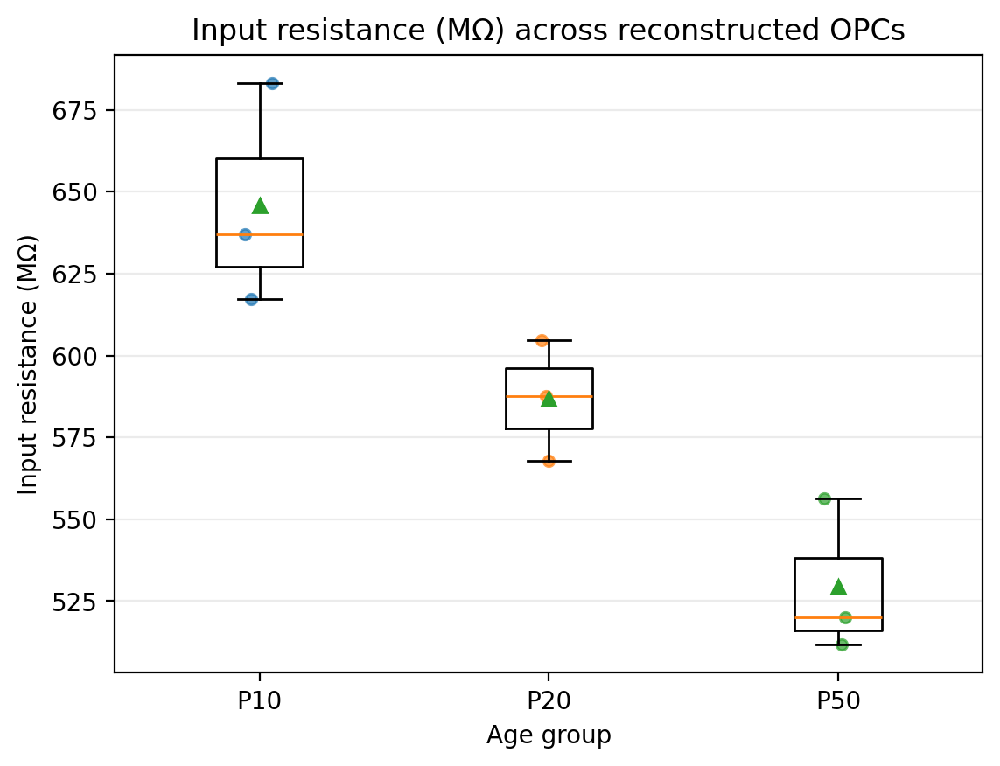
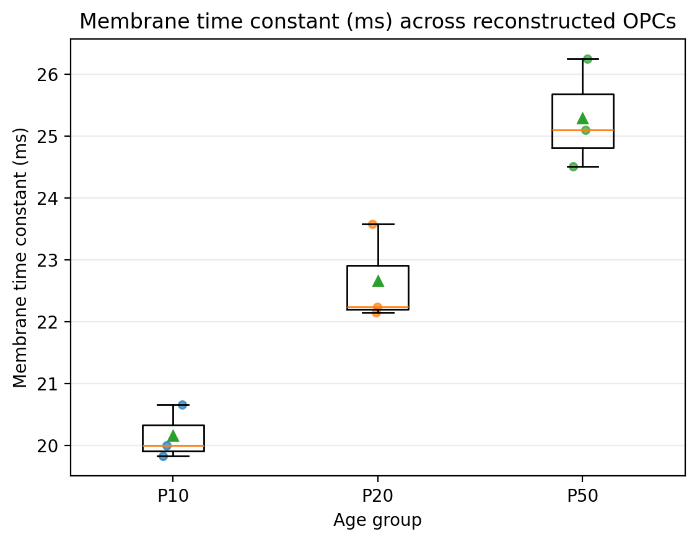
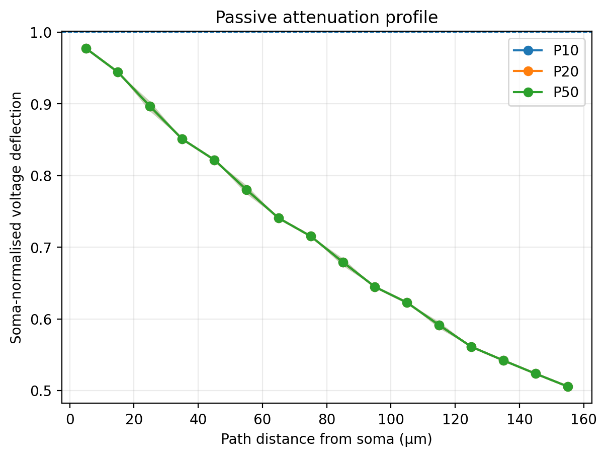
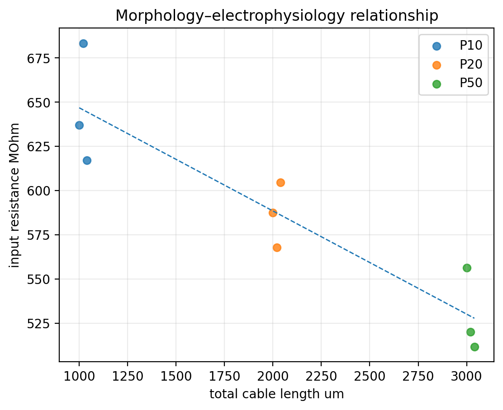

Step-4 cells inspected: 9. QC-accepted cells: 9.




| age_group | metric | n | mean | sd | median | iqr | minimum | maximum | mean_ci_low | mean_ci_high |
|---|---|---|---|---|---|---|---|---|---|---|
| P10 | input_resistance_MOhm | 3 | 645.8 | 33.93 | 637 | 33.05 | 617.2 | 683.3 | 617.2 | 683.3 |
| P10 | tau_ms | 3 | 20.16 | 0.4407 | 19.99 | 0.4169 | 19.83 | 20.66 | 19.83 | 20.66 |
| P10 | maximum_path_distance_um | 3 | 130 | 10 | 130 | 10 | 120 | 140 | 120 | 140 |
| P10 | mean_soma_normalised_attenuation | 3 | 0.72 | 1.36e-16 | 0.72 | 0 | 0.72 | 0.72 | 0.72 | 0.72 |
| P10 | minimum_soma_normalised_attenuation | 3 | 0.45 | 0 | 0.45 | 0 | 0.45 | 0.45 | 0.45 | 0.45 |
| P10 | total_cable_length_um | 3 | 1020 | 20 | 1020 | 20 | 1000 | 1040 | 1000 | 1040 |
| P10 | maximum_branch_order | 3 | 5 | 1 | 5 | 1 | 4 | 6 | 4 | 6 |
| P10 | n_terminals | 3 | 7 | 1 | 7 | 1 | 6 | 8 | 6 | 8 |
| P10 | n_segments | 3 | 21 | 1 | 21 | 1 | 20 | 22 | 20 | 22 |
| P20 | input_resistance_MOhm | 3 | 586.7 | 18.45 | 587.5 | 18.44 | 567.8 | 604.7 | 567.8 | 604.7 |
| P20 | tau_ms | 3 | 22.66 | 0.7983 | 22.24 | 0.7135 | 22.15 | 23.58 | 22.15 | 23.58 |
| P20 | maximum_path_distance_um | 3 | 130 | 10 | 130 | 10 | 120 | 140 | 120 | 140 |
| P20 | mean_soma_normalised_attenuation | 3 | 0.72 | 1.36e-16 | 0.72 | 0 | 0.72 | 0.72 | 0.72 | 0.72 |
| P20 | minimum_soma_normalised_attenuation | 3 | 0.45 | 0 | 0.45 | 0 | 0.45 | 0.45 | 0.45 | 0.45 |
| P20 | total_cable_length_um | 3 | 2020 | 20 | 2020 | 20 | 2000 | 2040 | 2000 | 2040 |
| P20 | maximum_branch_order | 3 | 5 | 1 | 5 | 1 | 4 | 6 | 4 | 6 |
| P20 | n_terminals | 3 | 7 | 1 | 7 | 1 | 6 | 8 | 6 | 8 |
| P20 | n_segments | 3 | 21 | 1 | 21 | 1 | 20 | 22 | 20 | 22 |
| P50 | input_resistance_MOhm | 3 | 529.4 | 23.72 | 520.1 | 22.32 | 511.7 | 556.3 | 511.7 | 556.3 |
| P50 | tau_ms | 3 | 25.29 | 0.8859 | 25.1 | 0.8711 | 24.51 | 26.25 | 24.51 | 26.25 |
| P50 | maximum_path_distance_um | 3 | 130 | 10 | 130 | 10 | 120 | 140 | 120 | 140 |
| P50 | mean_soma_normalised_attenuation | 3 | 0.72 | 1.36e-16 | 0.72 | 0 | 0.72 | 0.72 | 0.72 | 0.72 |
| P50 | minimum_soma_normalised_attenuation | 3 | 0.45 | 0 | 0.45 | 0 | 0.45 | 0.45 | 0.45 | 0.45 |
| P50 | total_cable_length_um | 3 | 3020 | 20 | 3020 | 20 | 3000 | 3040 | 3000 | 3040 |
| P50 | maximum_branch_order | 3 | 5 | 1 | 5 | 1 | 4 | 6 | 4 | 6 |
| P50 | n_terminals | 3 | 7 | 1 | 7 | 1 | 6 | 8 | 6 | 8 |
| P50 | n_segments | 3 | 21 | 1 | 21 | 1 | 20 | 22 | 20 | 22 |
| metric | test | groups | statistic | p_value |
|---|---|---|---|---|
| input_resistance_MOhm | Kruskal-Wallis | P10;P20;P50 | 7.2 | 0.02732 |
| tau_ms | Kruskal-Wallis | P10;P20;P50 | 7.2 | 0.02732 |
| maximum_path_distance_um | Kruskal-Wallis | P10;P20;P50 | 0 | 1 |
| mean_soma_normalised_attenuation | Kruskal-Wallis | P10;P20;P50 | 0 | 1 |
| minimum_soma_normalised_attenuation | Kruskal-Wallis | P10;P20;P50 | 0 | 1 |
| total_cable_length_um | Kruskal-Wallis | P10;P20;P50 | 7.2 | 0.02732 |
| maximum_branch_order | Kruskal-Wallis | P10;P20;P50 | 0 | 1 |
| n_terminals | Kruskal-Wallis | P10;P20;P50 | 0 | 1 |
| n_segments | Kruskal-Wallis | P10;P20;P50 | 0 | 1 |
| metric | group_a | group_b | n_a | n_b | test | statistic | p_value | cliffs_delta | median_difference | p_holm |
|---|---|---|---|---|---|---|---|---|---|---|
| input_resistance_MOhm | P10 | P20 | 3 | 3 | Mann-Whitney U | 9 | 0.1 | 1 | 49.43 | 0.3 |
| input_resistance_MOhm | P10 | P50 | 3 | 3 | Mann-Whitney U | 9 | 0.1 | 1 | 116.8 | 0.3 |
| input_resistance_MOhm | P20 | P50 | 3 | 3 | Mann-Whitney U | 9 | 0.1 | 1 | 67.39 | 0.3 |
| tau_ms | P10 | P20 | 3 | 3 | Mann-Whitney U | 0 | 0.1 | -1 | -2.247 | 0.3 |
| tau_ms | P10 | P50 | 3 | 3 | Mann-Whitney U | 0 | 0.1 | -1 | -5.107 | 0.3 |
| tau_ms | P20 | P50 | 3 | 3 | Mann-Whitney U | 0 | 0.1 | -1 | -2.86 | 0.3 |
| maximum_path_distance_um | P10 | P20 | 3 | 3 | Mann-Whitney U | 4.5 | 1 | 0 | 0 | 1 |
| maximum_path_distance_um | P10 | P50 | 3 | 3 | Mann-Whitney U | 4.5 | 1 | 0 | 0 | 1 |
| maximum_path_distance_um | P20 | P50 | 3 | 3 | Mann-Whitney U | 4.5 | 1 | 0 | 0 | 1 |
| mean_soma_normalised_attenuation | P10 | P20 | 3 | 3 | Mann-Whitney U | 4.5 | 1 | 0 | 0 | 1 |
| mean_soma_normalised_attenuation | P10 | P50 | 3 | 3 | Mann-Whitney U | 4.5 | 1 | 0 | 0 | 1 |
| mean_soma_normalised_attenuation | P20 | P50 | 3 | 3 | Mann-Whitney U | 4.5 | 1 | 0 | 0 | 1 |
| minimum_soma_normalised_attenuation | P10 | P20 | 3 | 3 | Mann-Whitney U | 4.5 | 1 | 0 | 0 | 1 |
| minimum_soma_normalised_attenuation | P10 | P50 | 3 | 3 | Mann-Whitney U | 4.5 | 1 | 0 | 0 | 1 |
| minimum_soma_normalised_attenuation | P20 | P50 | 3 | 3 | Mann-Whitney U | 4.5 | 1 | 0 | 0 | 1 |
| total_cable_length_um | P10 | P20 | 3 | 3 | Mann-Whitney U | 0 | 0.1 | -1 | -1000 | 0.3 |
| total_cable_length_um | P10 | P50 | 3 | 3 | Mann-Whitney U | 0 | 0.1 | -1 | -2000 | 0.3 |
| total_cable_length_um | P20 | P50 | 3 | 3 | Mann-Whitney U | 0 | 0.1 | -1 | -1000 | 0.3 |
| maximum_branch_order | P10 | P20 | 3 | 3 | Mann-Whitney U | 4.5 | 1 | 0 | 0 | 1 |
| maximum_branch_order | P10 | P50 | 3 | 3 | Mann-Whitney U | 4.5 | 1 | 0 | 0 | 1 |
| maximum_branch_order | P20 | P50 | 3 | 3 | Mann-Whitney U | 4.5 | 1 | 0 | 0 | 1 |
| n_terminals | P10 | P20 | 3 | 3 | Mann-Whitney U | 4.5 | 1 | 0 | 0 | 1 |
| n_terminals | P10 | P50 | 3 | 3 | Mann-Whitney U | 4.5 | 1 | 0 | 0 | 1 |
| n_terminals | P20 | P50 | 3 | 3 | Mann-Whitney U | 4.5 | 1 | 0 | 0 | 1 |
| n_segments | P10 | P20 | 3 | 3 | Mann-Whitney U | 4.5 | 1 | 0 | 0 | 1 |
| n_segments | P10 | P50 | 3 | 3 | Mann-Whitney U | 4.5 | 1 | 0 | 0 | 1 |
| n_segments | P20 | P50 | 3 | 3 | Mann-Whitney U | 4.5 | 1 | 0 | 0 | 1 |